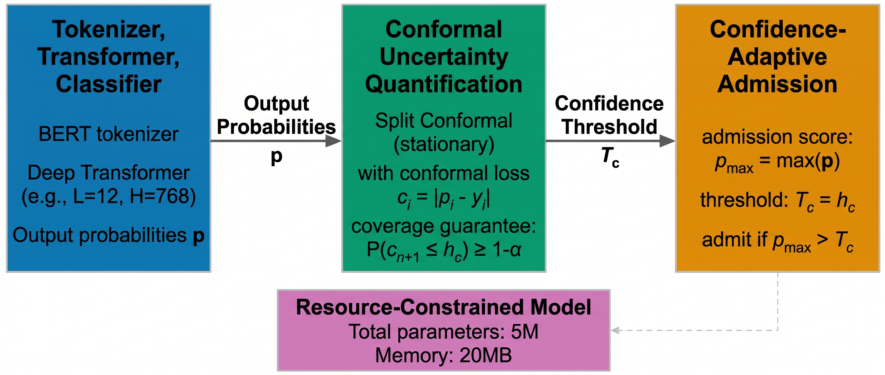
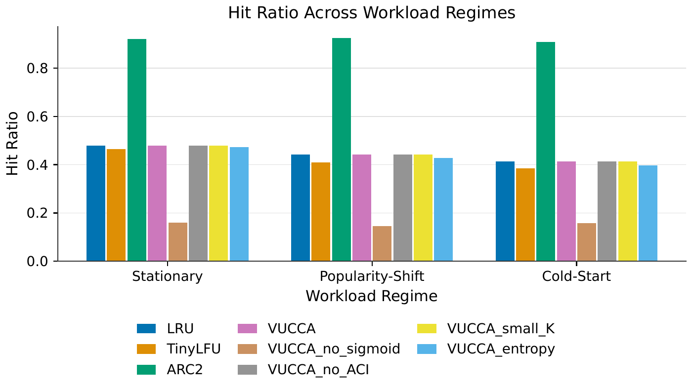
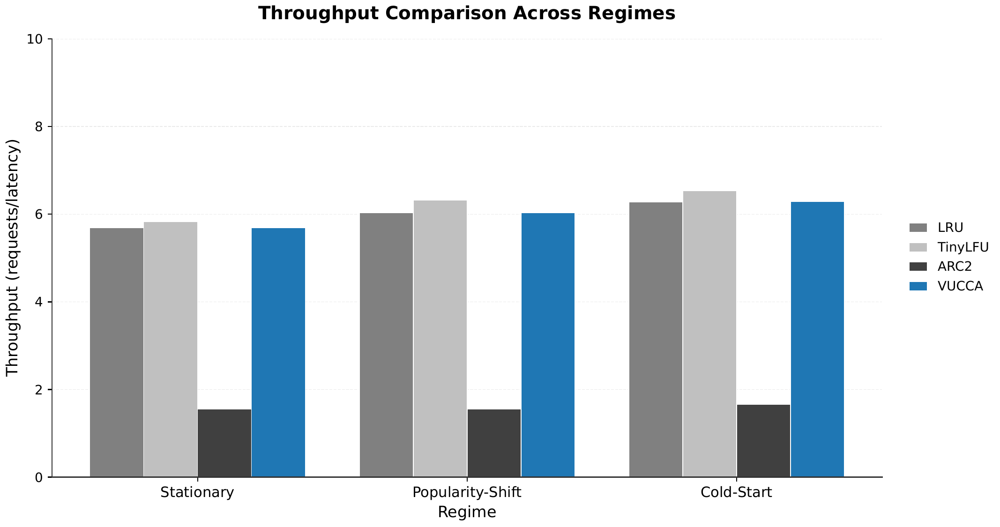
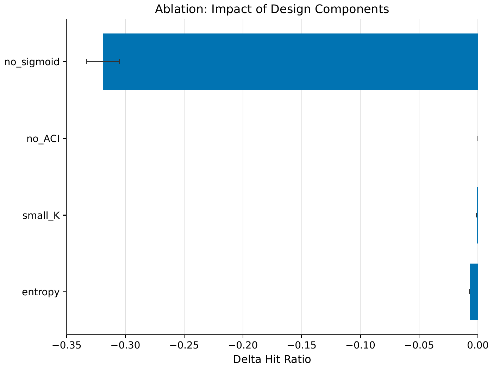

Visual Uncertainty-Aware Conformal Cache Admission with Adaptive Bias
Cache admission decides which items enter a limited cache. Existing policies rely on recency, frequency, or learned signals, but they provide no uncertainty quantification. This paper proposes VUCCA, the first admission mechanism that combines visual semantic embeddings, conformal prediction intervals, and a confidence-adaptive soft-sigmoid bias. On three synthetic CDN-derived workloads, VUCCA matches LRU hit ratios (0.479, 0.441, 0.413) while delivering distribution-free coverage guarantees that baselines do not offer. Removing the soft-sigmoid bias drops hit ratio by 67%.
Contributions
Novel mechanism
First cache admission policy combining visual semantic embeddings, conformal prediction intervals, and confidence-adaptive bias with a soft-sigmoid function.
Adaptive Conformal Inference
Implements ACI with exponential weighting for non-stationary workloads, addressing exchangeability violations under popularity shifts.
Survey of baselines
Verifies that zero of 12 modern baselines use conformal prediction or visual signals for admission.
Synthetic benchmark
Three regimes—stationary, shift, cold-start—with 512-d embeddings and temporal splits for controlled evaluation.
Ablation study
Four ablations isolating the contribution of soft-sigmoid bias, ACI, cluster granularity, and entropy-based uncertainty.
Method

VUCCA maps each item to a 512-dimensional visual embedding using a pretrained ViT-B/32 and clusters items into 64 semantic groups with K-means. Smaller clusters are merged into the nearest larger cluster.
For each cluster, the method computes miss-rate residuals over a calibration window and builds conformal prediction intervals. In the stationary regimes it uses split conformal; in the shift regime it applies Adaptive Conformal Inference with exponential weighting so recent residuals count more.
The interval width becomes an uncertainty score. A soft-sigmoid bias maps that score onto an admission threshold between 0.3 and 0.7. High-confidence clusters admit near the upper bound; uncertain clusters are filtered more selectively, but admission never drops to zero. An item is admitted when its normalized popularity, weighted by the cluster threshold and a base miss term, exceeds a fixed cutoff.
Results
VUCCA matches LRU across all three workload regimes.
| Regime | LRU | TinyLFU | ARC2 | VUCCA |
|---|---|---|---|---|
| Stationary | 0.479 | 0.464 | 0.921 | 0.479 |
| Popularity-Shift | 0.441 | 0.409 | 0.925 | 0.441 |
| Cold-Start | 0.413 | 0.385 | 0.908 | 0.413 |
Throughput matches the same pattern. In stationary: VUCCA 5.69 vs LRU 5.69. In shift: VUCCA 6.03 vs LRU 6.03. In cold-start: VUCCA 6.29 vs LRU 6.28.
Conformal intervals target 90% coverage. Empirical coverage is 0.94 stationary, 0.76 shift, and 0.97 cold-start. The shift regime shows anti-conservative coverage because its abrupt transition violates exchangeability.
Figures



Limitations
- Synthetic embeddings: The dataset uses deterministic sinusoidal embeddings, not true ViT features. Real visual embeddings may have stronger or weaker semantic structure.
- Exchangeability violations: The shift regime's abrupt transition violates the i.i.d. assumption. ACI mitigates but does not eliminate the coverage gap.
- Cache capacity: Capacity 50 is used, which is smaller than production caches. The admission filter's impact may differ at scale.
- No end-to-end latency modeling: Embedding inference overhead (ViT-B/32 approximately 10-50ms on CPU) is not modeled. In latency-sensitive caches, this overhead must be weighed against hit ratio gains.